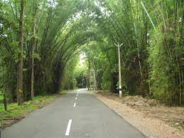

WAYANAD
Wayanad district is bordered by Karnataka (Kodagu and Mysore districts) to the north and north-east, Tamil Nadu (Nilgiris district) to the south-east, Malappuram to the south, Kozhikode to the south-west and Kannur to the north-west.[12] Pulpally in Wayanad boasts the only Lava-Kusha temple in Kerala and Vythiri has the only mirror temple in Kerala, which is a Jain temple. Varambetta mosque is the oldest Muslim mosque of Wayanad. People of Wayanad live in absolute harmony with each other. Wayanad is famous for its role in the Cotiote War, where Pazhassi Raja with the help of the Kurichya tribe in association with Hindus and Muslims of the Malabar region launched a revolt against the British. Kaniyambetta and Muttil Panchayaths are the centrally located Panchayaths with the best access from all corners of Wayanad, while Tavinjal Panchayath is on the northeast border with Kannur district.